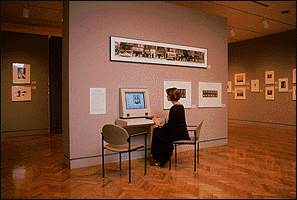

The Minneapolis Institute of Arts
Main Menu ~ Educational Programs ~ African Art and Culture ~ Ancient Art of the Mediterranean ~ The Art of Persuasion: 17th Century European Painting ~ Art of the Americas ~ Arts of Japan ~ From Silver to Silica: A History of Photography ~ Museum Directory
Interactive Media Programs
 43k
Interactive computer programs and audio stations located throughout the museum allow visitors to explore the art, music, literature and current events of specific cultures and time periods.The Minneapolis Institute of Arts is developing over a dozen interactive programs to enhance your overall museum experience and encourage you to examine more closely the works of art installed in the galleries. Each program is unique and allows you to explore, according to your own interests, such areas as the culture, history, techniques, and artists behind our most important works of art.
Interactive Touch Screen Programs
About the Interactive Media Group
The Interactive Media Group at the Minneapolis Institute of Arts produces all of the interactive programs in-house. The programs are presented on Macintosh computers, and in most cases, the graphics, animation, audio, and programming are stored directly on the computer's hard disk. Some of the programs use a videodisc player to display video sequences. The monitors are touch-sensitive and allow the visitor to make choices and navigate through the programs at his or her own pace.The production of these programs was funded through a generous grant from the General Mills corporation.
For more information on The Minneapolis Institute of Arts Interactive Media programs contact the Interactive Media Group (612) 870-3211, Email: miagen@mtn.org .
Main Menu ~ Educational Programs ~ African Art and Culture ~ Ancient Art of the Mediterranean ~ The Art of Persuasion: 17th Century European Painting ~ Art of the Americas ~ Arts of Japan ~ From Silver to Silica: A History of Photography ~ Museum Directory